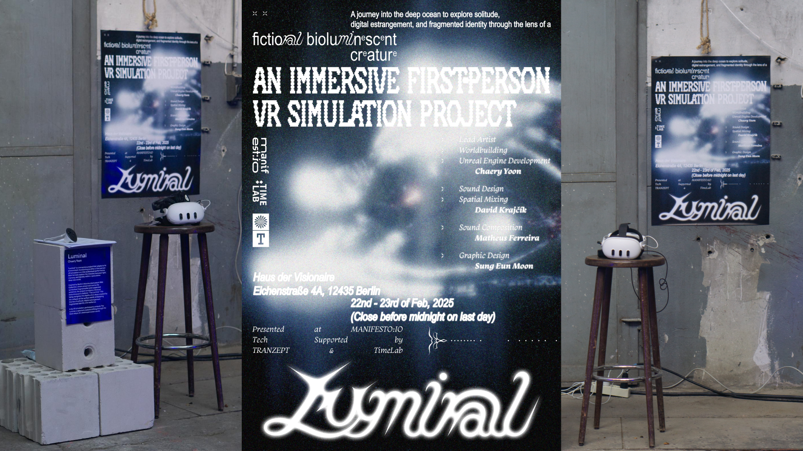
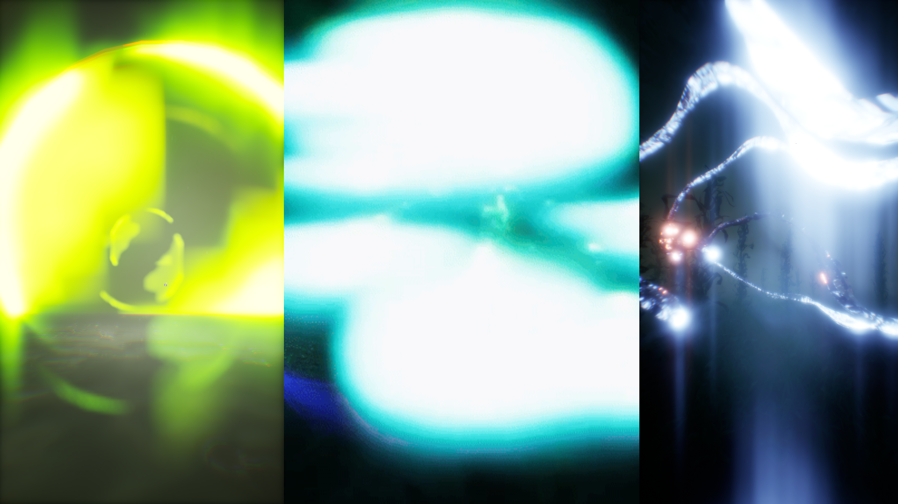
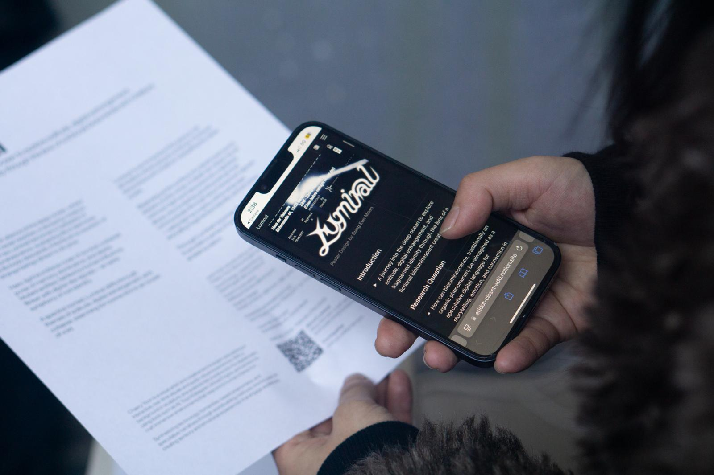
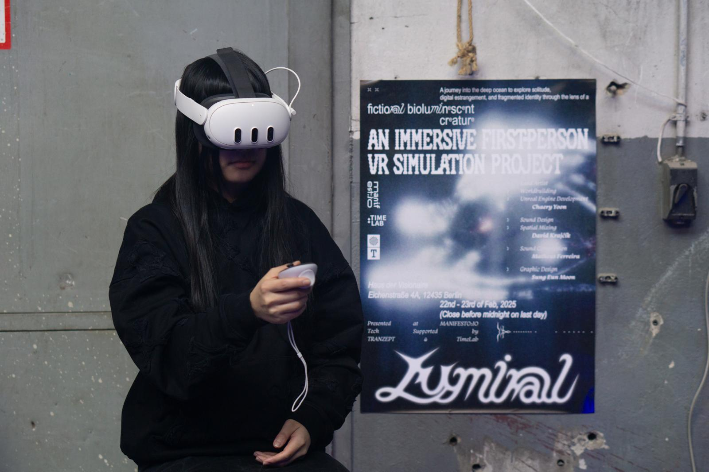
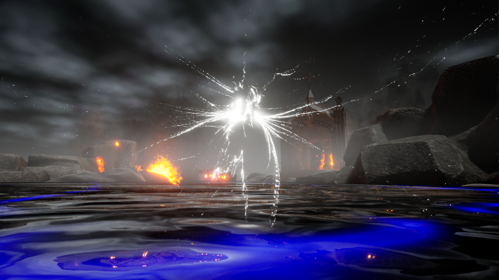

Luminal is an immersive first-person VR simulation that invites the viewer into the deep ocean through the perspective of a fictional bioluminescent creature. Beginning at the surface of a collapsed world, the journey descends into a lightless abyss, guided by an unknown glow.
In this submerged environment, light functions as a speculative language rather than a visual effect—glowing entities communicate through pulses, signals, and flickers, encoding fragmented identity, emotion, and memory. Bioluminescence becomes a medium for connection in isolation, transforming darkness into a space of resonance and survival.
Through themes of solitude, digital estrangement, and post-collapse existence, Luminal explores how light can transcend aesthetics to operate as communication, presence, and shared affect within virtual worlds.
Presented at MANIFEST:IO (Haus der Visionäre, Berlin, 2025).